Attempted making the dithering a lighter color, but it was too strong.
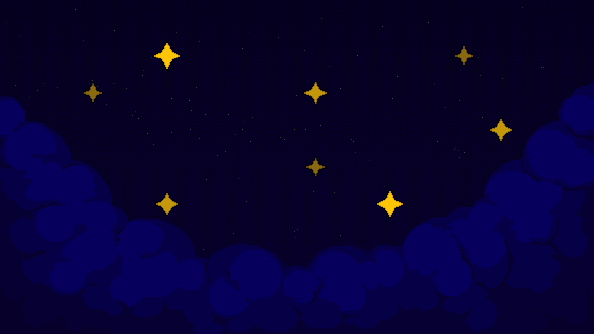
Attemped a new way of shading the clouds, and this was the version we went with.
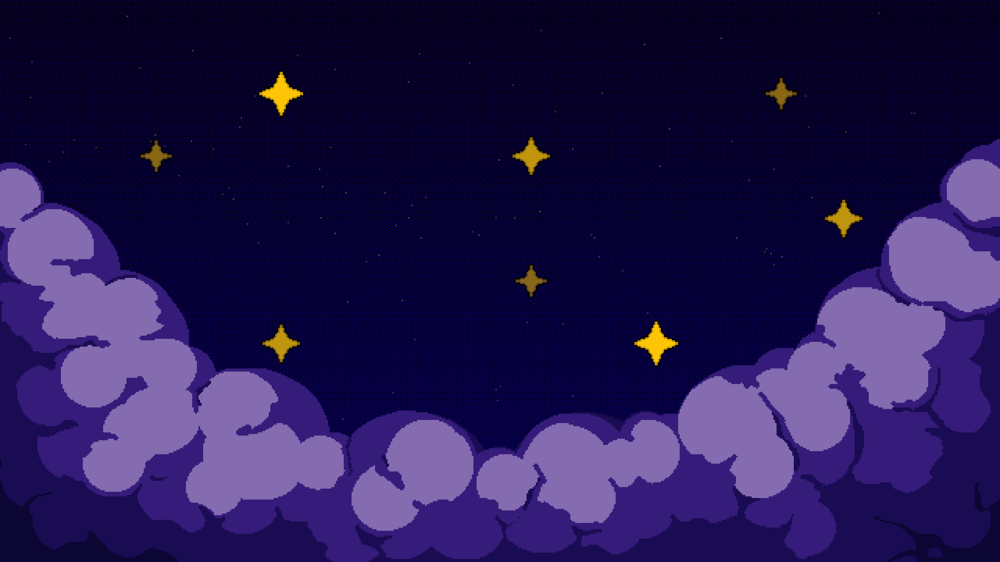
Attemped a new set of colors for the clouds, and while this helped with the clouds standing out, it was still lacking depth.
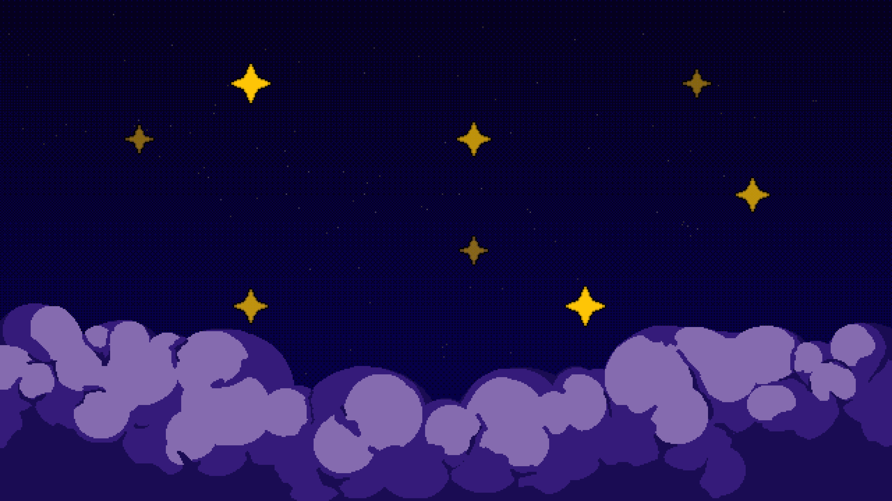
Made the clouds flatter, so there was more room for the stars.
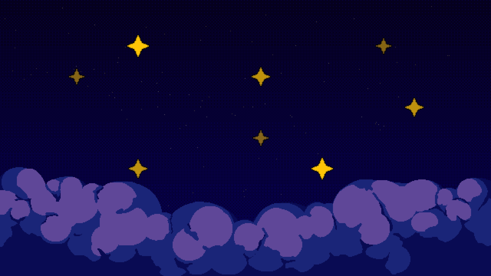
New color scheme for the clouds, decided to move forward with this.
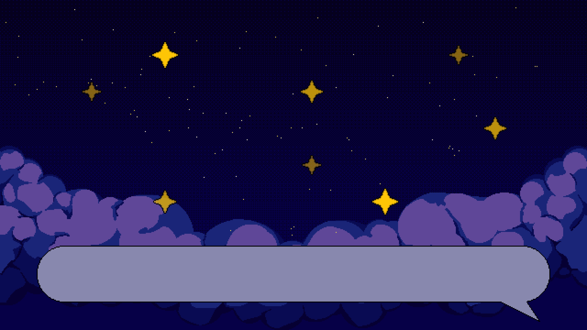
Moved the clouds up, so they could be seen over the speech bubble asset.
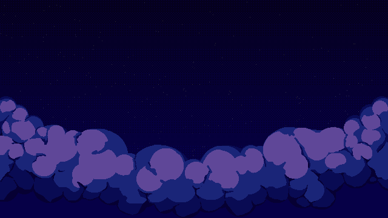
The final background with animated stars.
Grave
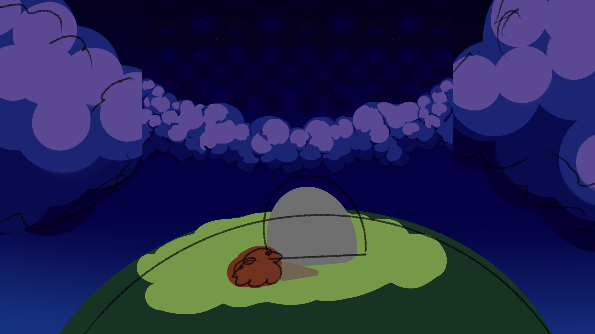
The original sketch of the enlarged background to include the grave.
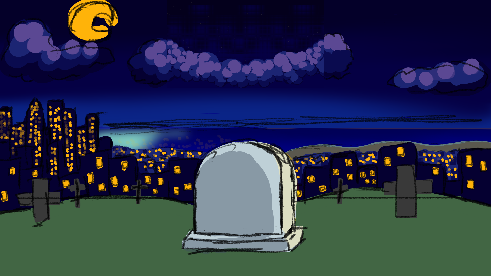
A new sketch that is larger. Created to include a noticable difference between the left half and right half, to mirror the mom and child's relationship.'
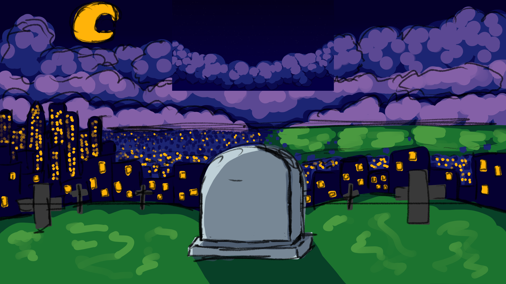
An improved sketch of the background, removing the ocean.
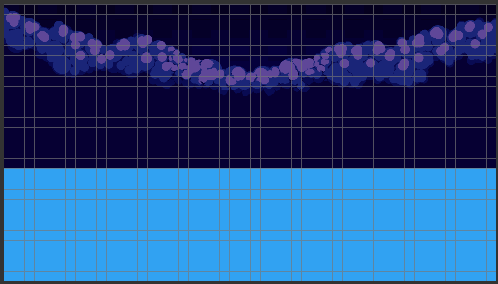
Blocking out the clouds and skyline.
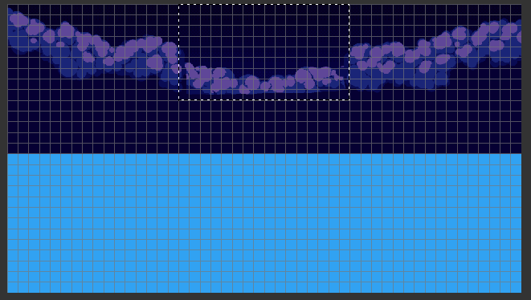
The old background placed on top of the new one, ensuring they line up..
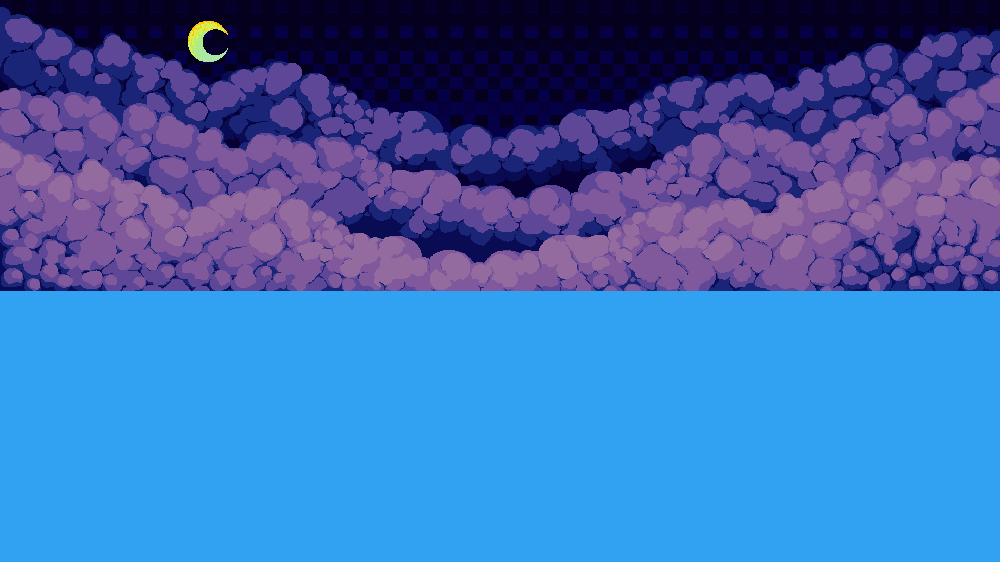
Added more clouds to the background.
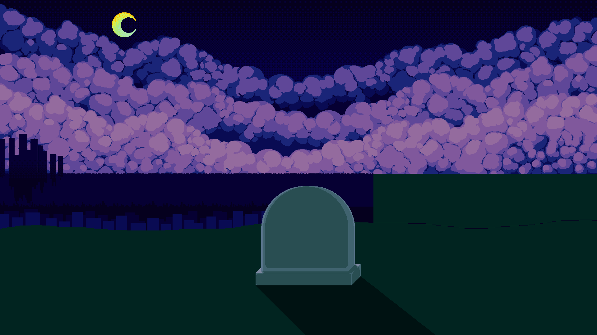
Started drawing in the city and the gravestone.
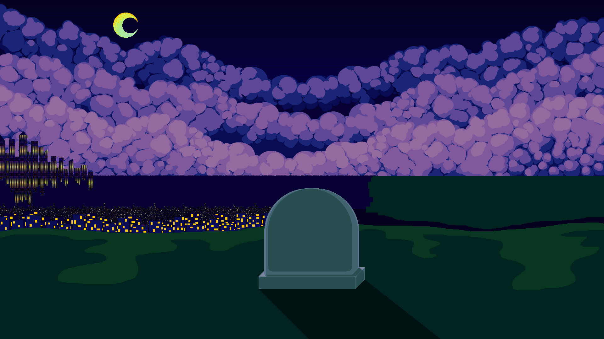
Added lights to the city, started working on foreground.
The final drawing with the animated stars.
Stars
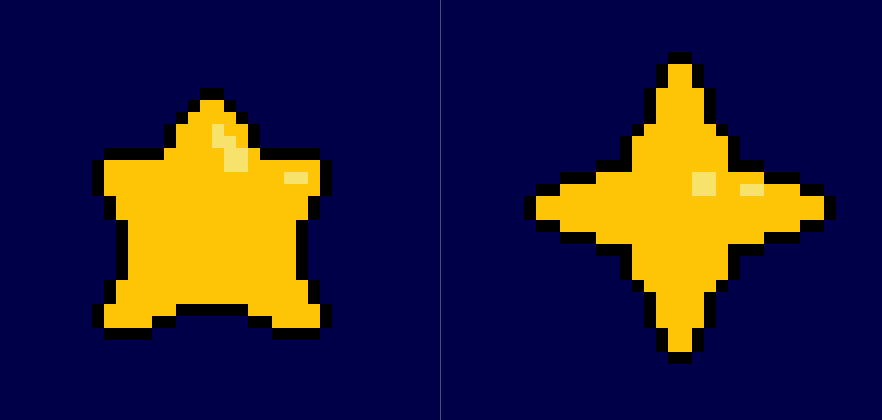
The original sketches of stars. Decided to move forward with the 4 pointed star.
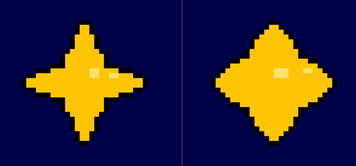
Sketch of skinny and chunky stars, decided to move forward with the skinny star.
Star animation idea. Decided to not move forward with this, as it was too distracting.
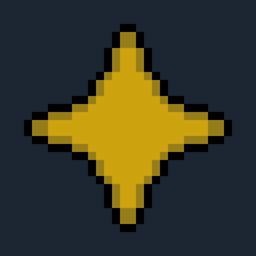
Less distracting star animation, decided to move forward with this.